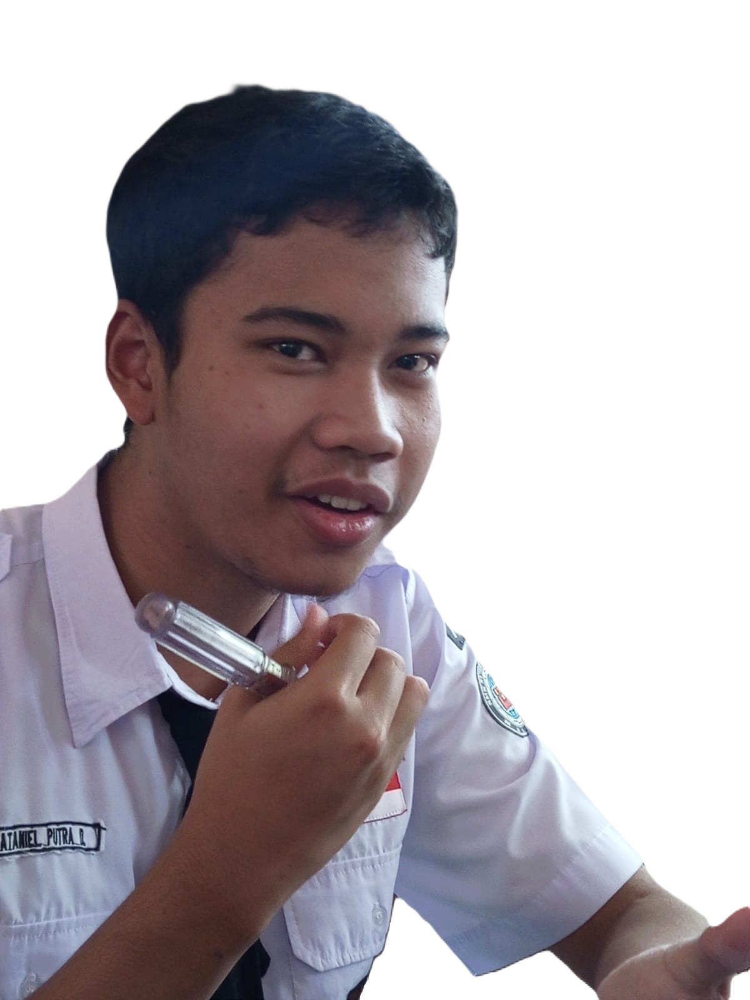

Nama saya Andi Pratama, lahir di Jakarta pada tanggal 2 Februari 1990. Saya lulusan dari Universitas Indonesia jurusan Teknik Informatika. Saya memiliki pengalaman kerja selama 5 tahun di bidang pengembangan perangkat lunak. Di waktu luang, saya suka membaca buku dan bermain musik
